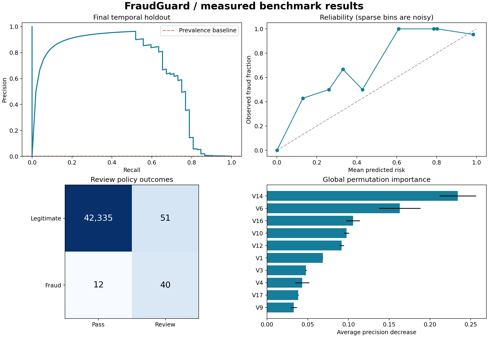

FRAUDGUARD / EXPERIMENT REPORT
Risk scores, tested forward in time.
A reproducible fraud screening benchmark with separate model selection, probability calibration,
policy tuning, and final evaluation windows. Generated from an actual training run.
0.662Average precision
76.9%Fraud recall at fixed threshold
44.0%Review precision
0.21%Transactions flagged
Research benchmark, not a live banking validation. The anonymized PCA inputs cannot be produced
from raw card transactions without the original upstream transformation. Two days of data cannot establish long-term reliability.
Measured results

Final test: 42,438 transactions, 52 frauds. ROC AUC: 0.9497.
Brier score: 0.000572. AP bootstrap interval: 0.536–0.812.
This row bootstrap assumes independent observations and fixes prevalence; it does not capture temporal uncertainty.
How the decision was made
Champion: logistic_balanced.
Selection uses tuning-window average precision only. Sigmoid calibration uses the next disjoint window.
Threshold 0.005685 minimizes simulated review and missed-fraud cost under a 1.0%
validation review budget. This fixed threshold cannot guarantee the same capacity on future traffic.
Assumed cost: 2 per review and 100 per missed fraud,
with perfect recovery of reviewed fraud. Test simulated cost: 1,382 versus
5,200 with no reviews. These are illustrative units, not measured financial savings.
| Candidate | Tuning AP | Fit + score |
|---|
| logistic_balanced | 0.8033 | 0.6s |
| histboost_leaves15_natural | 0.7954 | 5.6s |
| histboost_leaves15_balanced | 0.8024 | 4.3s |
| histboost_leaves31_natural | 0.7687 | 4.3s |
| histboost_leaves31_balanced | 0.7917 | 4.8s |
Data and leakage controls
284,807 input rows;
1,081 exact duplicates removed; 486 rows purged near boundaries.
Same timestamps remain together. All preprocessing is fit inside training. Time is used only for splitting.
| Window | Rows | Frauds | Seconds from start |
|---|
| train | 141,863 | 262 | 0–84692 |
| tune | 42,469 | 87 | 84753–126512 |
| calibrate | 28,247 | 30 | 126573–139297 |
| policy | 28,223 | 41 | 139358–151319 |
| test | 42,438 | 52 | 151381–172792 |
Data SHA-256: 76274b691b16a6c49d3f159c883398e03ccd6d1ee12d9d8ee38f4b4b98551a89
Operational interpretation
Global feature importance explains dependence on anonymized components,
not causal reasons for an individual transaction. No protected attributes or customer identifiers are available,
so fairness, repeat-customer leakage, and customer-level generalization remain untested.
Drift monitor alert on test versus training: True.
PSI is a diagnostic heuristic; pair it with delayed labeled performance and review-queue capacity.
See evaluation.json for complete measured results and docs/RUNBOOK.md for deployment and rollback.